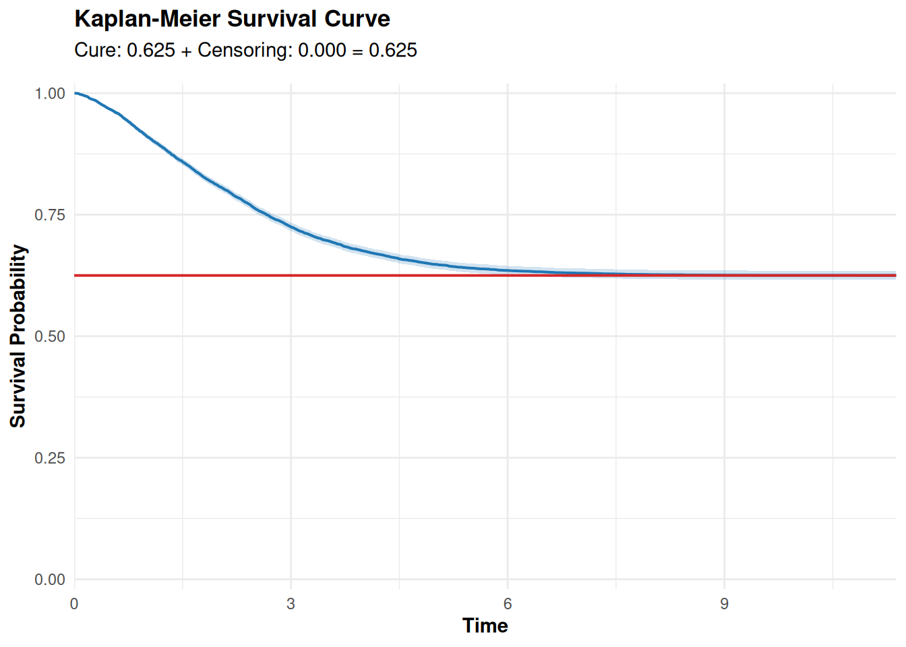
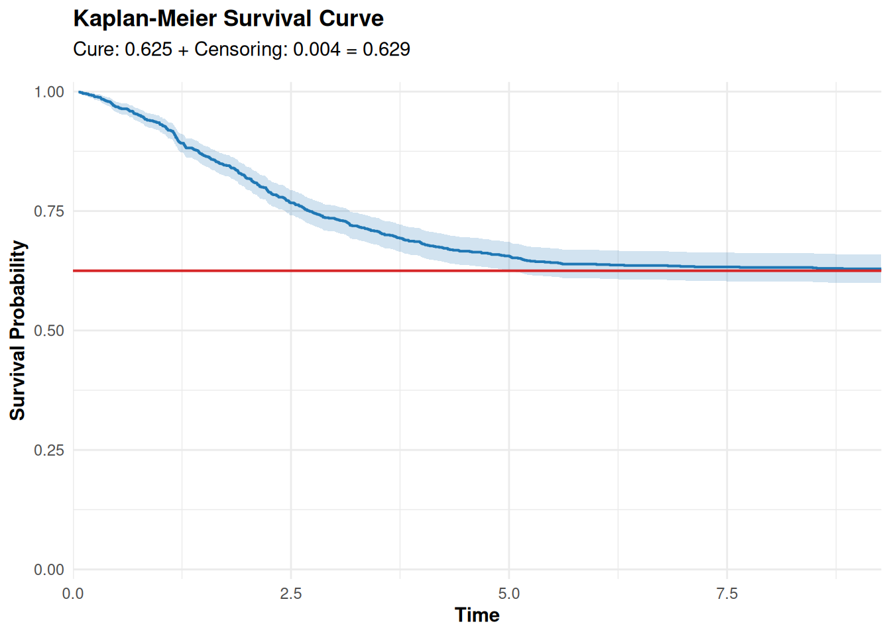
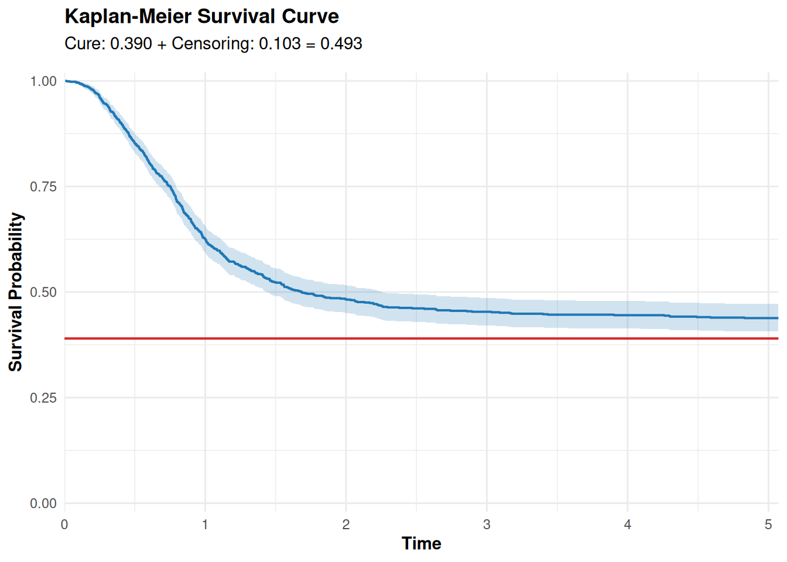
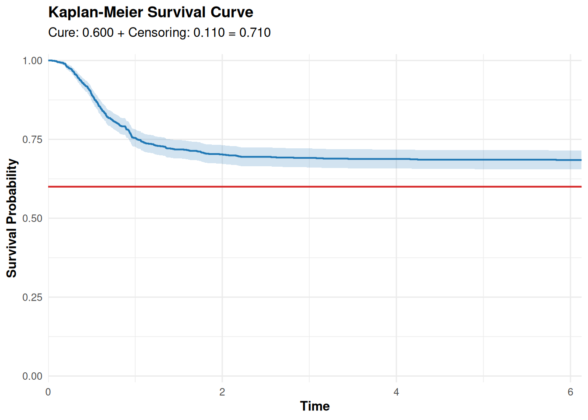
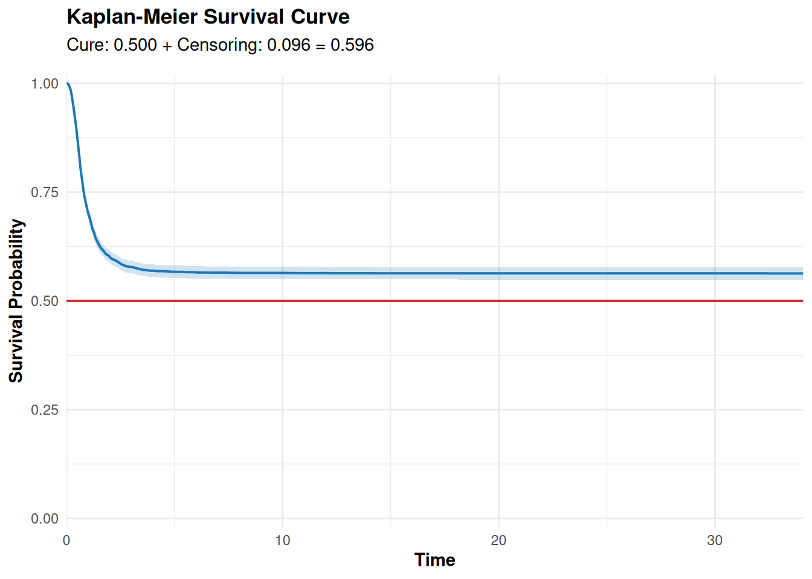

library(rlang)
library(tibble)
library(dplyr)
library(survival)
library(purrr)
rm(list = ls())
# Exemplo 4 (Dagum especificando quantílica e outra distribuição para a censura)
q_dagum <- function(u, theta, alpha, beta) {
((u * theta) / (beta * (theta - u)))^(1 / alpha)
}
surv_dagum <- function(t, theta, beta, alpha) {
1 - theta * beta / (beta + theta * t^(-alpha))
}
theta <- 0.5
beta <- 1.2
alpha <- 2.5
n <- 5000L
surv <- surv_dagum
quantile_function <- q_dagum
censoring_cdf <- pweibull
args_censoring_cdf <- list(shape = 2.5, scale = 2.3)
args_model <- c(theta = theta, beta = beta, alpha = alpha)
prop_zeros <- 0.6
library(ggplot2)
library(survival)
plot_kaplan <- function(
dados,
surv,
title = "Kaplan-Meier Survival Curve",
xlab = "Time",
ylab = "Survival Probability",
color = "#1F77B4",
ci_color = "#1F77B4",
cure_color = "#D62728",
base_size = 11,
ci_alpha = 0.2,
line_size = 0.7,
show_cure = TRUE,
cure_label = "Cure: ",
censoring_label = "Censoring: ",
...
) {
# Teórica fração de cura
cure_prob <- surv(.Machine$double.xmax, ...)
# Proporções de censura
total_censored <- mean(dados$delta == 0)
additional_censoring <- total_censored - cure_prob
# Ajuste Kaplan-Meier
dados_surv <- Surv(time = dados$t, event = dados$delta)
km_fit <- survfit(dados_surv ~ 1)
# Dados da curva
km_data <- data.frame(
time = km_fit$time,
surv = km_fit$surv,
upper = km_fit$upper,
lower = km_fit$lower
)
# Remove queda final artificial, se necessário
if (tail(km_data$surv, 1) < cure_prob) {
km_data <- km_data[-nrow(km_data), ]
}
max_time <- max(km_data$time)
# Subtítulo informativo
plot_subtitle <- if (show_cure) {
bquote(
.(cure_label) * .(sprintf("%.3f", abs(cure_prob))) ~ "+" ~
.(censoring_label) * .(sprintf("%.3f", abs(additional_censoring))) ~
"=" ~
.(sprintf("%.3f", total_censored))
)
}
# Construção do gráfico
p <- ggplot(km_data, aes(x = time)) +
geom_ribbon(
aes(ymin = lower, ymax = upper),
fill = ci_color,
alpha = ci_alpha
) +
geom_step(aes(y = surv), color = color, linewidth = line_size) +
scale_y_continuous(limits = c(0, 1), expand = c(0, 0.02)) +
scale_x_continuous(expand = expansion(mult = c(0, 0.05))) +
labs(
x = xlab,
y = ylab,
title = title,
subtitle = plot_subtitle
) +
theme_minimal(base_size = base_size) +
theme(
plot.title = element_text(face = "bold", hjust = 0, size = base_size + 2),
plot.subtitle = element_text(
face = "bold",
hjust = 0,
color = "black",
size = base_size,
margin = margin(b = 10)
),
axis.title.x = element_text(face = "bold"),
axis.title.y = element_text(face = "bold")
)
# Adiciona linha da fração de cura com annotate()
if (show_cure) {
p <- p +
annotate(
"segment",
x = 0,
xend = max_time,
y = cure_prob,
yend = cure_prob,
color = cure_color,
linewidth = line_size
)
}
return(p)
}
# Waring Fragility Model - Random Activation
surv_wfm_random <- function(G) {
function(t, rho, a, ...) {
cure <- rho / (a + rho)
cure + (1 - cure) * (1 - G(t, ...))
}
}
desity_wfm_random <- function(g) {
function(t, rho, a, ...) {
cure <- rho / (a + rho)
(1 - cure) * g(t, ...)
}
}
surv_wfm_random_weibull <- surv_wfm_random(G = pweibull)
cdf_wfm_random_weibull <- function(t, rho, a, shape, scale) {
1 - surv_wfm_random_weibull(t, rho, a, shape = shape, scale = scale)
}
pdf_wfm_random_weibull <- desity_wfm_random(g = dweibull)
#' Geração de dados censurados com fração de cura
#'
#' Esta função gera um conjunto de observações (t, δ) sob um modelo de fração
#' de cura, permitindo ao usuário:
#' * controlar a proporção total de zeros (`prop_zeros`, soma de curados e censurados),
#' * usar uma CDF de censura arbitrária (ou regra uniforme interna),
#' * fornecer ou não a função quantílica de T.
#'
#' @param n Integer. Número de observações a gerar.
#' @param quantile_function Função quantílica de T em `u -> QT(u, ...)`. Se `NULL`,
#' o algoritmo resolve `S(t) = π + u` numericamente.
#' @param surv Função de sobrevivência de T em `t -> ST(t, ...)`.
#' @param censoring_cdf Função CDF de censura `c -> FC(c, ...)`. Se `NULL`, usa
#' censura uniforme em [0, T_i].
#' @param args_censoring_cdf Lista de argumentos adicionais para `censoring_cdf`.
#' @param args_model Vetor nomeado com parâmetros a passar a `surv` e
#' `quantile_function` (se fornecida).
#' @param prop_zeros Numeric em [π, 1], proporção total de zeros desejada
#' (curados + censurados). Se `NULL`, adota-se `prop_zeros = π`.
#'
#' @return Um `tibble` com colunas:
#' * `t`: tempo observado (mínimo entre T e C, ou `Inf` para curados puros),
#' * `delta`: indicador de evento (1 se falha, 0 se censurado ou curado).
#'
#' @details
#' 1. Calcula a fração de cura teórica π = ST(∞) via busca binária em `find_cure_limit`.
#' 2. Define `p_c = (prop_zeros - π)/(1 - π)`, fração de censura entre suscetíveis.
#' 3. Gera tempos verdadeiros Tᵢ por quantilização ou raiz numérica.
#' 4. Divide em curados (Tᵢ = ∞) e suscetíveis (Mi ~ Bernoulli(1 - π)).
#' 5. Escolhe `k = round(|I| * p_c)` suscetíveis para censurar.
#' 6. Gera Ci:
#' - Se `censoring_cdf` é função: Vi ~ U(0, FC(Tᵢ)), Ci = F⁻¹_C(Vi);
#' - Senão: Ci ~ U(0, Tᵢ).
#' 7. Observação final: tᵢ = min(Tᵢ, Ci), δᵢ = 1{Tᵢ ≤ Ci}.
#'
#' @examples
#' \dontrun{
#' set.seed(123)
#' dados <- random_cure(
#' n = 1000,
#' surv = surv_dagum,
#' quantile_function = q_dagum,
#' censoring_cdf = pweibull,
#' args_censoring_cdf = list(shape = 1.5, scale = 2),
#' args_model = c(theta = 0.5, beta = 1.2, alpha = 2.5),
#' prop_zeros = 0.6
#' )
#' }
#' @export
random_cure <- function(
n = 1L,
quantile_function = NULL,
surv,
censoring_cdf = NULL,
args_censoring_cdf = NULL,
args_model,
prop_zeros = NULL
) {
# Essa função apenas busca um valor de t, chamado upper,
# tal que surv(upper) fornece a cura teórica do modelo.
find_cure_limit <- function(
surv,
tol = 1e-6,
tol_time = 1e-6,
t_init = 10,
t_max = 1e5
) {
# Aproximação da fração de cura
pi_hat <- surv(t_max)
# Busca exponencial para achar intervalo
t_lower <- t_init
t_upper <- t_lower
repeat {
diff <- abs(surv(t_upper) - pi_hat)
if (diff < tol || t_upper >= t_max) break
t_lower <- t_upper
t_upper <- min(t_upper * 2, t_max)
}
if (t_upper >= t_max && abs(surv(t_upper) - pi_hat) > tol) return(NA_real_)
# Busca binária refinada
while ((t_upper - t_lower) > tol_time) {
t_mid <- 0.5 * (t_lower + t_upper)
s_mid <- surv(t_mid)
if (abs(s_mid - pi_hat) < tol) {
t_upper <- t_mid
} else {
t_lower <- t_mid
}
}
# Retorna o menor valor de t tal que a sobrevivência converge
# para cura do modelo.
t_upper
}
surv <- purrr::partial(surv, !!!args_model)
upper <- find_cure_limit(surv = surv)
cure_fraction <- surv(upper * 10)
# Default: se não especificar, prop_zeros = fração de cura
if (is.null(prop_zeros)) {
prop_zeros <- cure_fraction
}
if (prop_zeros < cure_fraction || prop_zeros > 1) {
stop(sprintf(
"valor inválido para prop_zeros = %.3f (%.3f <= prop_zeros <= 1), pois cure_fraction = %.3f!",
prop_zeros,
cure_fraction,
cure_fraction
))
}
# Root-finding para quantis sem vetorizar diretamente
find_root_no_vec <- function(u, func) {
uniroot(
\(t) func(t) - u,
lower = 0,
upper = upper,
tol = .Machine$double.eps^0.5
)$root
}
find_root <- function(u, func) {
vapply(
X = u,
FUN = \(ui) find_root_no_vec(ui, func),
FUN.VALUE = double(1)
)
}
if (is.function(censoring_cdf)) {
censoring_cdf <- purrr::partial(censoring_cdf, !!!args_censoring_cdf)
}
# Quantil de T
if (is.function(quantile_function)) {
quantile_function_real_time <- function(n) {
q <- purrr::partial(quantile_function, !!!args_model)
q(runif(n, 0, 1 - cure_fraction))
}
} else {
quantile_function_real_time <- function(n) {
u <- cure_fraction + (1 - cure_fraction) * runif(n)
purrr::partial(find_root, func = surv)(u)
}
}
# Quantil de C
if (is.function(censoring_cdf)) {
quantile_function_censoring <- function(t_i) {
u <- runif(length(t_i), 0, censoring_cdf(t_i))
purrr::partial(find_root, func = censoring_cdf)(u)
}
} else {
quantile_function_censoring <- function(t_i) {
runif(length(t_i), 0, t_i)
}
}
# Fração de censura entre suscetíveis
p_c <- (prop_zeros - cure_fraction) / (1 - cure_fraction)
# Geração dos tempos
t_true <- quantile_function_real_time(n)
m <- rbinom(n = n, size = 1L, prob = 1 - cure_fraction)
t_true <- ifelse(m == 0L, Inf, t_true)
# Seleção de quem será censurado
k <- round(sum(m == 1L) * p_c)
id <- sample(which(m == 1L), size = k)
# Geração de t_c: vetor de Inf, preenchido apenas em `id`
t_c <- rep(Inf, n)
t_c[id] <- quantile_function_censoring(t_true[id])
# Observação final e indicador de evento
t <- pmin(t_true, t_c)
delta <- ifelse(t_true < t_c, 1L, 0L)
tibble(t = t, delta = delta)
}
# Teste rápido
rho <- 2.5
a <- 1.5
shape <- 1.5
scale <- 2.5
set.seed(0)
dados <- random_cure(
n = 10000L,
surv = surv_wfm_random_weibull,
args_model = c(rho = rho, a = a, shape = shape, scale = scale),
prop_zeros = NULL
)
plot_kaplan(
dados,
surv = surv_wfm_random_weibull,
rho = rho,
a = a,
shape = shape,
scale = scale
)
# Exemplo 1 (PVF sem especificar a quantílica) ---------------------------
rho <- 2.5 # rho > 2
a <- 1.5
shape <- 1.5
scale <- 2.5
set.seed(0)
dados <-
random_cure(
n = 1000L,
surv = surv_wfm_random_weibull,
args_model = c(rho = rho, a = a, shape = shape, scale = scale),
prop_zeros = NULL
)
plot_kaplan(
dados,
surv = surv_wfm_random_weibull,
rho = rho,
a = a,
shape = shape,
scale = scale
)
# Exemplo 2 (Dagum sem especificar a quantílica) -------------------------
surv_dagum <- function(t, theta, beta, alpha) {
1 - theta * beta / (beta + theta * t^(-alpha))
}
theta <- 0.61
beta = 1.2
alpha <- 2.5
set.seed(0)
dados <-
random_cure(
n = 1000L,
surv = surv_dagum,
args_model = c(theta = theta, beta = beta, alpha = alpha),
prop_zeros = 0.5
)
dados |>
dplyr::group_by(delta) |>
dplyr::summarise(n = dplyr::n(), prop = n / nrow(dados))# A tibble: 2 × 3
delta n prop
<int> <int> <dbl>
1 0 493 0.493
2 1 507 0.507plot_kaplan(
dados,
surv = surv_dagum,
theta = theta,
alpha = alpha,
beta = beta
)
# Exemplo 3 (Dagum especificando a quantílica) ---------------------------
q_dagum <- function(u, theta, alpha, beta) {
((u * theta) / (beta * (theta - u)))^(1 / alpha)
}
surv_dagum <- function(t, theta, beta, alpha) {
1 - theta * beta / (beta + theta * t^(-alpha))
}
theta <- 0.4
beta = 1.2
alpha <- 2.5
set.seed(0)
dados <-
random_cure(
n = 1000L,
surv = surv_dagum,
quantile_function = q_dagum,
args_model = c(theta = theta, beta = beta, alpha = alpha),
prop_zeros = 0.7
)
plot_kaplan(
dados,
surv = surv_dagum,
theta = theta,
alpha = alpha,
beta = beta
)
dados |>
dplyr::group_by(delta) |>
dplyr::summarise(n = dplyr::n(), prop = n / nrow(dados))# A tibble: 2 × 3
delta n prop
<int> <int> <dbl>
1 0 710 0.71
2 1 290 0.29# Exemplo 4 (Dagum especificando quantilica e outra distribuição para a censura ----
q_dagum <- function(u, theta, alpha, beta) {
((u * theta) / (beta * (theta - u)))^(1 / alpha)
}
surv_dagum <- function(t, theta, beta, alpha) {
1 - theta * beta / (beta + theta * t^(-alpha))
}
theta <- 0.5
beta = 1.2
alpha <- 2.5
set.seed(0)
dados <-
random_cure(
n = 5000L,
surv = surv_dagum,
quantile_function = q_dagum,
censoring_cdf = pweibull,
args_censoring_cdf = list(shape = 2.5, scale = 2.3),
args_model = c(theta = theta, beta = beta, alpha = alpha),
prop_zeros = 0.6
)
plot_kaplan(
dados,
surv = surv_dagum,
theta = theta,
alpha = alpha,
beta = beta
)
dados |>
dplyr::group_by(delta) |>
dplyr::summarise(n = dplyr::n(), prop = n / nrow(dados)) # A tibble: 2 × 3
delta n prop
<int> <int> <dbl>
1 0 2980 0.596
2 1 2020 0.404